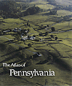

A splendid portrait of Pennsylvania and its people
A splendid portrait of Pennsylvania and its people


 A splendid portrait of Pennsylvania and its people
A splendid portrait of Pennsylvania and its people

|  |
The Atlas of Pennsylvaniaedited by David J. Cuff, William J. Young, Edward K. Muller, Wilbur Zelinsky and Ronald F. Ablercloth EAN: 978-0-87722-618-5 (ISBN: 0-87722-618-0) |
Philadelphia Book Clinic Certificate of Award, 1990
Association of American University Presses Book Jacket Award, 1990
"Over three hundred years ago, William Penn wrote a letter to the Free Society of Traders in London promoting the development of the newly chartered Commonwealth of Pennsylvania. In it, he described the soil, air, and water he found upon his first visit:
'The land contains diverse sorts of earth.... The air is sweet and clear, the heavens serene, like the south parts of France.... The waters are generally good.... Of living creatures, fish, fowl, and the beasts of the woods, here are diverse sorts.... The woods are adorned with lovely flowers, for color, greatness, figure, and variety. I have seen the gardens of London best stored with that sort of beauty, but I think they may be improved by our woods.'
The Atlas of Pennsylvania, organized by professionals from Temple University, The Pennsylvania State University and the University of Pittsburgh, will let you experience for yourself the wonders William Penn discovered."
—Robert P. Casey, Governor
Which type of forest is the most prevalent in Pennsylvania? Where does the highest radon contamination occur? How far is Pittsburgh from Altoona and how busy are the highways between? All this information and much more can be found in The Atlas of Pennsylvania. The investor looking for development potential; the student researching coal resources; the family seeking a nearby vacation: all will find what they want in these pages.
With its large format, The Atlas of Pennsylvania is a visual cornucopia of five-color maps, photographs, satellite imagery, oblique air and high-altitude photos, wildlife drawings, reproductions of old maps, helpful charts, graphs, and diagrams, and detailed tables. Pennsylvania's natural environment, its resources, peoples, economy, history, recreational and cultural activities, and its rural and urban communities are clearly and attractively presented and interpreted by experts from all over the state. Altogether this geographical encyclopedia of the Commonwealth is an indispensable tool for homes, schools, and offices.
A cooperative project of Temple University, the University of Pittsburgh, and The Pennsylvania State University, The Atlas brings together information from hundreds of sources. Its 304 pages, including 250 pages of graphics, provide the most extensive coverage of the broadest range of topics ever assembled in a state atlas.
The organization of The Atlas makes it attractive to researcher and browser alike. An introductory essay, "The Pennsylvania Mosaic," by Peirce F. Lewis, acquaints the reader with the state's physical and historical background. The four major topical sections—on the land and its resources, its history, its human patterns, and its economic activity—are filled with facts, figures, and other revelations that will pique the interest of even the most knowledgeable Pennsylvanian. A section of maps and charts devoted solely to Philadelphia and Pittsburgh is included, as are appendices on legislative and judicial districts, executive districts, and recommended readings. A set of eight larger-scale reference maps, accompanied by a gazetteer with more than 3,200 listings, serves the reader who needs to find a specific town, river, lake, reservoir, ridge, or mountain.
The Atlas of Pennsylvania is a visually inviting and readily accessible source of information for residents and visitors, for individuals and businesses, for government administrators, planners, and decision-makers, and for public interest groups concerned with environmental, social, and political issues—indeed, for anyone who wants to learn more about the Keystone State.
With its large format (13¼" x 15½") and 304 pages, The Atlas features:
striking page and map designs, rendered in muted colors, and expertly produced
a refreshing variety of illustrations—multi-color maps, graphs, block diagrams, pen and ink drawings, sketches, photographs, high-altitude and oblique air photos, satellite imagery, and reproductions of old maps
text, closely integrated with the graphics, and written by the editors and 30 contributing specialists
introductory essay by Peirce F. Lewis that portrays the evolution of Pennsylvania's human landscape
an extensive section on natural vegetation and wildlife
very thorough treatment of historical topics: settlement, wars, industrial growth
a 25-page section showing economic, demographic, and social patterns in Philadelphia and Pittsburgh
8 large-scale reference plates and gazetteer with more than 3,200 listings
an index with close to 900 entries
"[A] landmark study.... Virtually everything of interest on the state is analyzed.... Visually sharp, well-organized maps and charts are enhanced by thoughtful, well-written essays on each topic.... [I]t's likely to be the benchmark against which future efforts will be judged. Highly recommended."
—Library Journal
Preface
The Pennsylvania Mosaic by Peirce F. Lewis
Land and Resources edited by David J. Cuff
Geology • Landforms • Climate • Hydrology • Air and Water Quality • Energy Resources • Soils • Vegetation • Wildlife • Environmental Overview
Pennsylvania's Past edited by Edward K. Muller
Indians • Early Cartography • Exploration and Settlement • French and Indian War • American Revolution • Human Patterns • Economic Activity • Cities • Nineteenth-century Wars • Education • Politics • History Remembered
Human Patterns edited by Wilbur Zelinsky
Demography • Health • Education • Housing • Religion • Ethnicity and Race • Language • Settlement Landscape • Communications • Culture Areas • Cultural Resources • Sports • Crime and Protection • Politics • Literature
Economic Activity edited by William J. Young
Overview • Land Use • Business and Finance • Employment • Personal Income • Transportation • Energy • Agriculture • Forestry • Commercial Fishing • Mineral Industries • Manufacturing • Trade and Services • Recreation
Philadelphia and Pittsburgh
Reference
Legislative and Judicial Districts • Executive Districts • Map Resources • Reference Plates • Gazetteer • Recommended Readings • Index • Guide to Counties
David J. Cuff is Associate Professor of Geography at Temple University.
William J. Young is Associate Proffessor of Geography at Temple University.
Edward K. Muller is Associate Professor of History at the University of Pittsburgh.
Wilbur Zelinsky is Professor of Geography at The Pennsylvania State University.
Ronald F. Abler is Professor of Geography at The Pennsylvania State University and Director of the Geography and Regional Science Program of the National Science Foundation.
© 2015 Temple University. All Rights Reserved. This page: http://www.temple.edu/tempress/titles/cuff_reg.html.